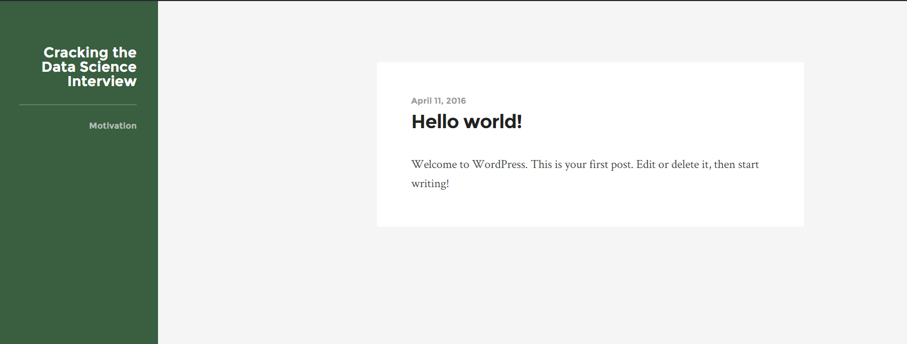

Mon 07 June 2021
There was more interest and questions from my why fitness post
Why Fitness than I had expected.
The questions I received confirmed my own experience, there
is a lot advice for fitness professions, random bits of advice, and
clickbait. But …
Continue reading »
Mon 07 June 2021
tldr A structured fitness plan can greatly improve your career and your quality of life as a knowledge worker.
Ignoring health may work short term but catches up to you slowly and subtly.
I say this being someone who neglected …
Continue reading »
Sun 02 June 2019
I'm in the process of testing out Azure Pipelines
with ArviZ, and in
the process have learned more about the platform. I'll share
my motivation as well as some tips.
Note that this is a live blog post that I'll …
Continue reading »
Sat 26 January 2019
When learning new material I find it challenging immediately recall all
the nuances of a particular term. As a learning strategy I frequently
create flashcards and reference sheets to reinforce my understanding, and
server as external memory. And for the …
Continue reading »
Sun 20 January 2019
Know the feeling when you use a tool that "just works" and instead of
frustration and lost time, you end up being more productive?
ArviZ should be for Bayesian practitioners.
Bayesian practitioners should be able to use their inference library …
Continue reading »
Mon 14 January 2019
When Thomas Wiecki
asked if I'd like coauthor a blog post with him, the obvious
answer was yes! For those who don't know Thomas is a PyMC core contributor
and the VP of Data Science at Quantopian. This is a …
Continue reading »
Fri 18 May 2018
Writing blog articles is great, but an aspect of it that is not is getting
running all the scripts to get everything setup. To start a blogging
session in no particular order I need to
- Traverse to my repository
- Start …
Continue reading »
Mon 12 March 2018
Recently I've been teaching coding more than ever, both to coworkers and
to students in my bootcamp. While they're all catching on and getting
results, its made me step back and realize, modern day programming is not
straightforward and with …
Continue reading »
Thu 04 January 2018
I recently finished the Udacity Machine Learning Nanodegree and wanted to share
the following thoughts on my experience.
If you haven't read my Review of Data Science Programs
I would do so first, to get a general explanation of the …
Continue reading »
Sun 26 November 2017
Creating a machine learning pipeline requires almost no thought these days but
maintaining a reusable and understandable codebase the whole way
through is much more challenging. However there are some steps and
ideas that can be borrowed from traditional programming …
Continue reading »
Sun 27 August 2017
I just spent the weekend at the Berkeley Reinforcement Learning Bootcamp.
Overall I found it to be an intense but rewarding experience but also
expensive if you're paying out of pocket.
Read on for more of my thoughts and my …
Continue reading »
Wed 08 March 2017
I recently started taking the Los Angeles Metro to work and wanted to share my experience
especially since it has overall been better than I originally
anticipated.
People tend to think that Los Angeles does not have public …
Continue reading »
Mon 23 January 2017
This is Part 3 in a series about how learning how to program could affect
your career and some of the experiences I've had with programming in mine
Continue reading »
Mon 16 January 2017
This is Part 2 in a series about how learning how to program could affect
your career and some of the experiences I've had with programming in mine
Continue reading »
Mon 09 January 2017
This is Part 1 in a series about how learning how to program could affect
your career and some of the experiences I've had with programming in mine
- Intent of series and introduction
- What Programming as a Non Programmer means …
Continue reading »
Thu 01 December 2016
I recently got accepted to the Udacity Artificial Intelligence Nanodegree program.
While I am planning to write about that when it starts, now is a good
time to talk about the experience I've had with previous Data Science programs.
Continue reading »
Mon 28 November 2016
SQL is a very extensive language but as a Data Analyst you don't have to know
all the ins and outs to start doing useful work. Here's a list of SQL concepts
and commands in a rough order of importance …
Continue reading »
Sun 27 November 2016
Recently I decided to start using Linux again as a primary OS on my laptop. I'm
doing this because I believe Linux is the best OS to solve my problems and
I'm committed on sticking with it this time. If …
Continue reading »
Mon 21 November 2016
Perhaps the most fundamental concept of D3 is the data join
which shortly summarized compares a dataset in memory with the data in a selection.
New elements are entered where no matched data exists in the selection,
current elements are …
Continue reading »
Sat 22 October 2016
I'm not the first to say this and I really doubt
I'll be the last. Being able to use and understand data is
becoming, if not already, a very powerful skill. Let me
go through the two perspectives I've encountered …
Continue reading »
Sat 15 October 2016
SVGs aren't always the most straightforward to work it and also are deceptively
simple but as you'll get more familiar with the API you'll be able to
combine SVG "methods" to more easily get what you need.
In this post …
Continue reading »
Sun 09 October 2016
When creating visualizations sometimes we want an element to be visible
in one portion of the SVG but perhaps in another. An example would be a chart
with axes that also implements zoom and pan. As we move the chart …
Continue reading »
Mon 03 October 2016
If you want to write good software I would argue that you have to develop a
a style based on experience partially based on experience but also with a
large dose of personal opinion. In fact I would argue go …
Continue reading »
Sat 01 October 2016
Originally when I started this blog I was frustrated with the Data Science
Interview process, having been in it for a number of months. However
shortly after starting this blog I was hired on full time by SpaceX, and
as …
Continue reading »
Sun 25 September 2016
In the last post we covered how to implement
basic zoom and pan in a D3 svg with one line but also left ourselves with an example
of an unexpected behavior.
In this post will dig deeper to see what's …
Continue reading »
Sat 27 August 2016
D3 is a fantastic library for sharing and engaging users in visualizations.
One of the best ways it does this is by leveraging user interactions, by means
of clicks, drags, and scrolls to highlight data. We'll be exploring how to …
Continue reading »
Sun 10 July 2016
After deciding to use a Statically Generated Site
I needed to pick a template. Trouble was that I had already found a template for
WordPress that I had liked.

The Wordpress theme
Luckily there was a GitHubRepo
that had many …
Continue reading »
Sun 10 July 2016
Initially when I decided to start this blog I started with what I already
had a WordPress blog. Wordpress had served me well in the past, especially
when I had a more limited programming background. Given the needs of this …
Continue reading »
Sun 22 May 2016
A group of software engineers want to develop an algorithm for finding strongly
connected groups among members of a social networking site. A group of people
are considered to be strongly connected if each person knows each other person
within …
Continue reading »
Mon 25 April 2016
Two people join a dating site independently. Upon signing up they pick 5 words to
describe themselves out of 25 given words. If 4 out of 5 of the words are the
same the dating site declares they're a match …
Continue reading »
Sat 23 April 2016
There are N students in a class. Some of them are friends, while some are not.
Their friendship is transitive in nature, i.e., if A is friend of B and B is friend of C,
then A is also …
Continue reading »
Sat 23 April 2016
In this blog I will post every single data science question I've been asked
during an interview, along with the context, and an in depth solution.
If you are practicing for a Data Science Interview I would advise that you …
Continue reading »
Sun 21 February 2016
Say you're the type of person that curious about how the world
works.
In most cases you would need to spend years studying the subject,
learning every nuance and detail. If you wanted to learn about Chess
you might turn …
Continue reading »